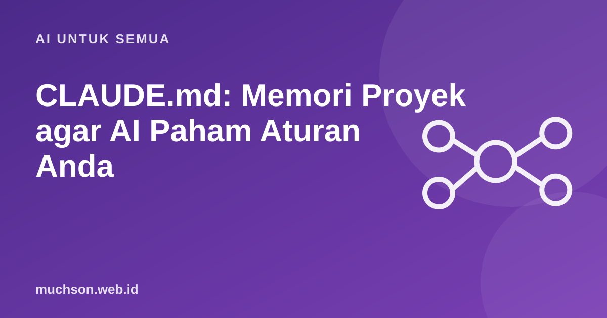

Beranda › Artikel › AI untuk Semua
AI untuk SemuaCLAUDE.md: Memori Proyek agar AI Paham Aturan Anda
Bayangkan setiap hari Anda harus menjelaskan ulang proyek kepada rekan baru. Itu yang terjadi bila agen coding tidak punya catatan tetap. File sederhana bernama CLAUDE.md di folder proyek menyelesaikannya, dan membuat hasil jauh lebih konsisten.

Apa itu CLAUDE.md?
CLAUDE.md adalah berkas teks (biasanya Markdown) di proyek Anda yang dibaca agen saat memulai sesi. Isinya adalah panduan: bagaimana menjalankan proyek, struktur folder, gaya penulisan kode, dan aturan khusus. Karena dibaca setiap sesi, Anda tidak perlu mengulang instruksi yang sama.
Isi yang efektif
| Bagian | Contoh isi |
|---|---|
| Cara menjalankan | Perintah untuk instalasi, menjalankan, tes, dan build |
| Struktur folder | Fungsi tiap folder utama dalam satu baris |
| Gaya kode | Penamaan, format, pola yang diikuti, hal yang dihindari |
| Aturan keras | Jangan mengubah file tertentu, jangan menambah dependensi tanpa izin |
| Catatan penting | Keputusan arsitektur dan alasan, jebakan yang pernah terjadi |
# Catatan proyek
## Menjalankan
- Pasang: npm ci
- Dev: npm run dev (port 5173)
- Tes: npm test
## Struktur
- src/components: komponen UI
- src/data: data statis, edit di sini untuk mengubah konten
## Aturan
- Jangan menambah dependensi baru tanpa bertanya.
- Ikuti gaya penamaan yang ada di folder yang sama.
- Ubah sesedikit mungkin; jangan merapikan kode di luar tugas.Kesalahan umum
Tanya jawab
Apakah wajib memakai CLAUDE.md?
Tidak wajib, tetapi sangat membantu konsistensi, terutama pada proyek yang berjalan lama atau dikerjakan beberapa orang.
Apakah file ini hanya untuk Claude Code?
Namanya khusus untuk alat itu, tetapi prinsipnya berlaku untuk agen coding lain yang membaca berkas panduan proyek.
Bagaimana bila agen mengabaikan isinya?
Periksa apakah instruksi jelas dan tidak bertentangan. Aturan yang benar-benar wajib sebaiknya didukung tes atau mekanisme otomatis.